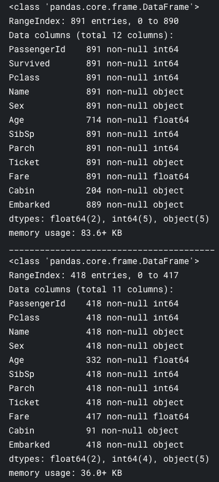
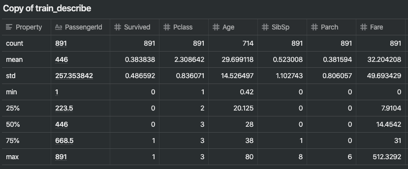

[Kaggle] titanic 데이터 분석
데이터 분석
train_df.info()
print('_'*40)
test_df.info()

표본에 대한 숫자형 값의 분포는?
우리가 케글에서 내려받은 데이터를 기반으로 학습 데이터가 전체 데이터를 대포하는 좋은 교육 데이터 세트인지 파악할 필요가 있다. 먼저 숫자형 데이터를 살펴본다.
-
총 샘플은 타이타닉호(2224명)의 실제 탑승객 수의 40%에 해당하는 891명.
-
생존자(Survived)는 0 또는 1 값을 갖는 범주형 형상이다. (1: 생존, 0: 사망)
-
데이터의 생존율 38퍼센트는 실제 데이터의 생존율인 32퍼센트와 유사해 학습 데이터가 실제 생존율을 대표한다고 볼 수 있다.
-
대부분의 승객(>75%)은 부모나 아이들과 함께 여행을 하지 않았다.
-
탑승객의 30% 가까이가 형제자매 및/또는 배우자가 타고 있었다.
-
512달러까지 높은 요금을 내는 승객은 거의 없고(<1%>) 요금은 다양하게 분포되어 있다.
-
65~80세 범위 내 노약자(1%)는 거의 없음

범주형 특성의 분포는?
-
이름은 전체 데이터에서 고유한 값을 가지고 있다. (891개의 이름이 다 다르다.)
-
성별은 2가지 종류를 가진 범주형 데이터로 65퍼센트는 남성이다. (top=male, freq=577/count=891)
-
객실 정보는 표본 전체에 걸쳐 여러 개의 중복된 값을 갖는다. (몇 명의 승객이 객실을 함께 이용했다.)
-
Embarked는 세 가지 가능한 값을 갖는다. 대부분의 승객이 사용하는 S 포트에서 탑승했다. (top=S)
-
티켓은 중복 값의 높은 비율(22%)을 가지고 있다(유니크=681).

데이터 분석에 따른 추정치
우리는 앞서 확인한 데이터를 다음과 같은 순서로 분석해야 한다.
상관 관계
- 각각의 특성이 라벨(생존여부)과 얼마나 잘 연관되어 있는지 알고 싶다.
- 프로젝트 초기에 상관 관계를 파악하고 프로젝트의 후반부에 모델링에 적용 시켜야 한다.
보완
- 나이 특성은 생존 여부와 관련이 있어 보이는 중요한 특성이다. 하지만 중간 중간 빈 값이 있어 이를 채워야 한다.
- Embarked 특성도 생존 혹은 다른 특성과 연관되어 있을 지 모른다. 빈 공간을 채우기 위해 다양한 방법을 생각해 봐야 한다.
수정
- 티켓 정보는 중복 비율(22%)이 높기 때문에 이 데이터를 어떻게 다룰지 고민해볼 필요가 있다. 어쩌면 생존 가능성과 티켓 정보는 상관 관계가 없어 분석에서 제외해야 할 수 있다.
- 객실 번호 특성은 빈 데이터가 과도하게 많아 훈련 및 검증 데이터셋에서 제거해야 할 수 있다.
- PassengerId 는 생존에 기여하지 않으므로 교육 데이터 집합에서 삭제할 수 있다.
- 이름 특성은 비교적 비표준적이며, 생존에 직접 기여하지 않을 수 있으므로 제거 할 수도 있다.
생성
- Parch와 SibSp 특성을 기반으로 Family라는 새로운 특성을 만들어 선내에 있는 가족 구성원들의 총수를 구하고자 할 수 있다. (Parch + SibSp)
- 이름 특성을 사용해 새로운 특성으로 타이틀 특성을 만들 수 있다.
- Age band라는 새로운 특성을 만들 수 있다. 나이는 연속적인 숫자형 데이터인데, 약간의 차이는 생존율과 영향이 없으니 이것을 비슷한 데이터끼리 묶어 범주형 데이터로 변경할 수 있다. (21세 32세 등으로 나이를 표시하는 것에서 20대 30대 같은 범주형 데이터로 표시하는 것)
- Fare(요금) 특성 역시 분석에 도움이 된다면 범주형 데이터로 만들 수 있다.
분류
위와 같은 데이터에 기반하여 아래와 같은 가설을 만들 수 있다.
- 여성(성별=여성)은 살아남았을 가능성이 더 높았다.
- 아이들 (에이지 <?)은 살아남았을 가능성이 더 높았다.
- 상류층 승객(Pclass=1)이 살아남았을 가능성이 높았다.
Analyze by pivoting features
일부 가정들을 확인하기 위해서 특성 데이터를 매칭해 생존 여부와 상관 관계를 쉽게 분석할 수 있다. 빈 값이 없는 데이터에 대해서만 매칭할 수 있다.
- Pclass(티켓 등급) - pclass와 survived 데이터를 묶어 관찰한다.
- pclass가 1인 경우 Survived가 0.5보다 크기 떄문에 의미있는 상관 관계가 있어 보인다.
- pclass의 값이 작을수록 생존율도 높아진다.
따라서 이 특성을 모델에 포함시키기로 했다.
train_df[['Pclass', 'Survived']]
.groupby(['Pclass'], as_index=False)
.mean()
.sort_values(by='Survived', ascending=False)

- 성별이 여성인 경우 생존율이 74%로 매우 높은 생존율을 보인다.
이 특성 역시 모델에 포함한다.
train_df[["Sex", "Survived"]].groupby(['Sex'], as_index=False)
.mean()
.sort_values(by='Survived', ascending=False)

- SibSp 및 Parch - 이 두 특성은 단일 특성으로 사용하기에는 생존 여부와 상관 관계가 없어 보인다.
- 두 특성은 합성 특성으로 사용하는게 최선으로 보인다.
train_df[["SibSp", "Survived"]].groupby(['SibSp'], as_index=False)
.mean()
.sort_values(by='Survived', ascending=False)
train_df[["Parch", "Survived"]].groupby(['Parch'], as_index=False)
.mean()
.sort_values(by='Survived', ascending=False)

Analyze by visualizing data
표로 확인하는 것보다 데이터를 분석하기 위해서 차트를 사용해 시각화해보면 놓친 관계를 찾을 수 있을지 모른다.
Correlating numerical features
숫자형 특성과 생존 사이의 관계를 파악하는 것 먼저 시작해보자.
histogram 차트는 나이같이 연속된 숫자의 숫자형 데이터의 패턴을 분석하는데 도움이 된다. 이런 연속된 데이터의 흐름을 보고 유아의 생존율이 더 높았나?, 노인의 생존율은 어떤가 같은 질문에 답할 수 있게 된다.
아래 차트를 보면 다음과 같은 결과를 볼 수 있다.
- 유아(age <= 4)의 생존율이 높았다.
- 가장 나이든 승객들 (age = 80)은 살아남았다.
- 15~25세의 나이대는 다수가 살아남지 못했다.
- 승객 대부분이 15-35세 사이에 분포되어 있다.
결정
위와 같은 분석을 기반으로 아래와 같이 데이터를 사용하기로 결정했다.
- 모델 트레이닝에서 연령을 고려해야 한다.
- 나이 데이터를 사용하기로 했기 때문에 빈 데이터를 채워야 한다.
- 연령대(age band) 그룹 특성을 만들어야 한다.
Correlating numerical and ordinal features (숫자형과 서수형)
우리는 단일 그림을 사용하여 상관관계를 식별하기 위해 여러 특성을 조합할 수 있다. 이 작업은 숫자 값을 갖는 숫자형 및 범주형 특성으로 수행할 수 있다.
# grid = sns.FacetGrid(train_df, col='Pclass', hue='Survived')
grid = sns.FacetGrid(train_df, col='Survived', row='Pclass', size=2.2, aspect=1.6)
grid.map(plt.hist, 'Age', alpha=.5, bins=20)
grid.add_legend();

- Pclass == 3인 승객이 다수였지만 대부분 살아남지 못했다.
- Pclass == 2거나 3 인 승객 중 영유아 승객들은 대부분 살아남았다.
- Pclass == 1 승객들은 대부분 살아남았다.
Correlating categorical features (범주형 특성의 상관 관계)
이제 범주형 특성을 솔루션 목표와 연관시킬 수 있다. pclass, Embarked, sex 데이터의 패턴을 확인해보자.
# grid = sns.FacetGrid(train_df, col='Embarked')
grid = sns.FacetGrid(train_df, row='Embarked', size=2.2, aspect=1.6)
grid.map(sns.pointplot, 'Pclass', 'Survived', 'Sex', palette='deep')
grid.add_legend()

- 여성 승객은 남성보다 생존율이 훨씬 높았다.
- Embarked=C 인 케이스는 예외적으로 남성 생존율이 더 높다. 이는 pclass와 Embarked 사이의 상관 관계가 될 수 있으며 Pclass 와 생존여부는 상관 관계가 있기 때문에 Embarked와 생존 여부 사이의 직접적인 상관 관계가 없더라도 합성 특성을 만들면 상관 관계를 찾을 수 있게 된다.
Correlating categorical and numerical features (범주형과 숫자형 사이의)
이번에는 범주형 데이터와 숫자형 데이터 사이의 상관관계를 알고 싶을 수 있다. 우리는 Embarked(범주적 비수적), Sex(범주적 비수적), Fare(수적 연속적), Survived(범주적 숫자)와의 상관성을 고려할 수 있다.
# grid = sns.FacetGrid(train_df, col='Embarked', hue='Survived', palette={0: 'k', 1: 'w'})
grid = sns.FacetGrid(train_df, row='Embarked', col='Survived', size=2.2, aspect=1.6)
grid.map(sns.barplot, 'Sex', 'Fare', alpha=.5, ci=None)
grid.add_legend()

- 요금을 더 많이 내는 승객들은 더 나은 생존이 가능했다. 요금 범위를 만들기 위한 우리의 가정을 확정한다.
- 승선항은 생존율과 상관관계가 있다.